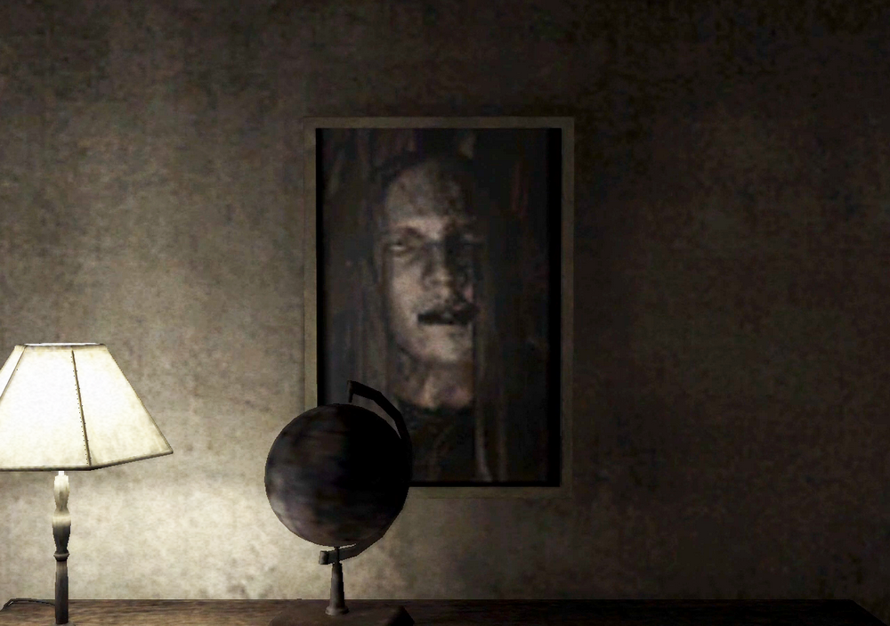
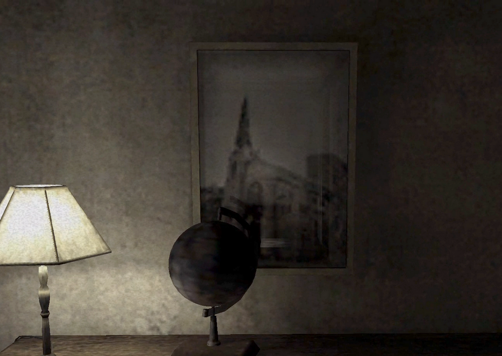

[SH4] Photo in the Bedroom: The Rarest Haunting

More Annoying Than Scary...
This is a mirror of the DeviantArt version linked above, provided as a backup and for easier access.

A photo of a church that Henry took in Silent Hill turns into Walter's face as a paranormal phenomenon. This is said to be the rarest haunting in SH4, and in fact, it's rarely seen. It's less bout being spooky and more like just straight-up harassment. Haha.
A normal photo. The glass reflects the closet and the furniture behind it, but Henry himself doesn't show up.

In horror games, there are two ways reflections are handled, either the protagonist is reflected, or they aren't. This one seems to be the latter, even though Henry's face is visible in the opening bathroom cutscene.
In many cases, when the protagonist is visible, a ghost appears behind them. But here, since the protagonist isn't reflected, the photo itself seems to be designed to change instead.
*Please enjoy with sound. The first few seconds are silent.
That's no ghost, it's a full-on monster!
✅ Natural trigger conditions: Unknown so far
When this happened, I had left the hauntings in the room alone, and the ghost from the wall and the child's shadow in the closet were showing up. I saved the data and tried retrying a bunch of times, but unlike the wall doll glitch, I couldn't get it to happen again from the save point. Or, maybe my luck is just catastrophically bad.
I checked out some other people's situations on YouTube and stuff, and it looked like this tended to happen, just like in my case, when there were multiple hauntings in the bedroom. So maybe the rate is higher if you don't do exorcisms, but it could just be a coincidence. I don't have enough data, it's so rare that I can only guess.